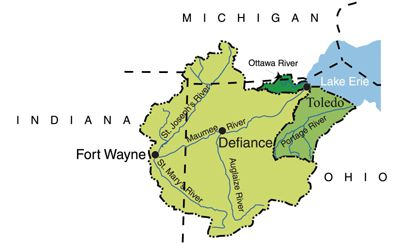

Indiana is working with landowners in our communities to help improve the water quality of our streams, rivers, and lakes, and ultimately Lake Erie. There are many groups including the Indiana State Department of Agriculture partnering on several projects that result in significant measureable load reductions in sediment, nitrogen and total phosphorus in the Lake Erie Basin through education, promotion, development and installation of voluntary water quality programs and best management practice (BMP) implementation.
The action and milestone table is a function of the Domestic Action Plan and tracks the progress of the partner groups on their commitments listed in the DAP.
The Action and Milestone Table is broken up into several sections including restoring natural hydrology and ecology function, urban point and nonpoint sources, rural point and nonpoint sources, education and outreach, and monitoring. The following tables contain partner updates, schedules, and accomplishments for the projects.
Voluntary conservation efforts made by private landowners in Indiana, with support provided by the Indiana Conservation Partnership (ICP), have contributed significantly to the efforts to reduce sediment and nutrients from entering Indiana’s tributaries and rivers. The top conservation practices implemented by landowners that contribute to these reductions include:
Conservation programs that are used by private landowners include the ISDA Clean Water Indiana (CWI) Program, the Indiana Department of Natural Resources’ (IDNR) Lake and River Enhancement (LARE) Program, as well as federally funded programs through EPA’s Section-319 Program administered by the Indiana Department of Environmental Management (IDEM), and the USDA’s Farm Bill Programs like the Environmental Quality Incentive Program (EQIP), the Regional Conservation Partnership Program (RCPP), the Great Lakes Restoration Initiative (GLRI) Program, the Wetlands Reserve Easement Program (WREP), the Conservation Stewardship Program (CSP), and the Conservation Reserve Program (CRP).
Soil Health, also referred to as soil quality, is defined as the continued capacity of soil to function as a vital living ecosystem that sustains plants, animals, and humans. Soil contains living organisms that when provided the basic necessities of life - food, shelter, and water – perform functions required to produce food, fuel and fiber. (USDA, NRCS)
Soil Health has four key principles for all types of lands:
By improving the health of the soil, it can:
One of the most wide-scale and effective efforts in Indiana on water quality improvement is the education and promotion of soil health systems and conservation cropping systems in agriculture. The members of the Indiana Conservation Partnership (ICP) are actively promoting a total conservation cropping systems approach to farming, including the education, training and outreach provided by the Conservation Cropping System Initiative (CCSI). This focus on soil health and function ultimately addresses Indiana’s primary natural resource concerns. Soil health practices include conservation tillage, using cover crops, adaptive nutrient management, integrated weed and pest management, diverse crop rotations, precision farming technology and prescriptive buffers. Soil Health is the Goal!
Conservation Tillage Practices, such as no-till, strip-till, ridge till and mulch till, are practices that leave crop residues on the soil surface to reduce soil erosion by water. Cover Crops are grown between regular cash crops like corn and soybeans to ensure a living root is growing all year long. Cover crops reduce soil compaction; they cover the soil and protect it from erosion; improve soil structure; increase soil organic matter; fix nitrogen and scavenge nitrogen depending on the species of cover crop used; and can produce forage or pasture.
To measure the impacts and trend of conservation tillage, Indiana begin a Tillage Transect in the spring of 1990, which is a predetermined route and on-the-ground survey, that measures the amount of residue left on the ground after planting. The ICP introduced a cover crop assessment to the spring transect in 2011. In 2014, a Fall Tillage and Cover Crop Transect was initiated. The information here shows results of the most recent reports and maps from the transect data within the Basin. For more information, visit the Cover Crop and Tillage Transect Data page.
The Indiana Department of Environmental Management (IDEM) has an interactive website that looks at how our activities impact water quality, and how we can change things for the better. Visit the You, Me, and Water Quality website to view a graphic on how to learn more about everyday actions that change our water quality.
To help solve the problem of excess nutrients in our waters, the 4R Nutrient Stewardship Certification Program was created and launched in March 2014. The certification program is composed of a set of science-based standards developed with industry and academic assistance which allow nutrient service providers a chance to follow standard recommendations that are third-party auditable. This is done to insure the standards are being followed when fertilizer recommendations are given to farmers. This program encourages agricultural nutrient service providers to adopt proven practices through the 4Rs – the Right Source, Right Rate, Right Time, and Right Place. In the Western Lake Erie Basin, there is one certified 4R retailer – click on the point on the map to learn more.
The Conservation Cropping System Initiative (CCSI) is a partnership between numerous organizations in Indiana, including the Indiana Conservation Partnership, all working toward improving soil health, soil productivity and cropping systems. There is one CCSI Soil Health hub farm located in Adams County where research data on cover crops, no-till, soil sampling, etc. is gathered, occasional educational events and workshops take place, and demonstration plots are accessible. Click on the map to see information about this site. Information on CCSI educational events and workshops around the state can be found on the CCSI website.
INFA is a proactive, collaborative opportunity for farmers to collect and understand personalized, on-farm data to optimize their management practices to ultimately improve their bottom line and benefit the environment. Through INFA, farmers use research data from their own farms and others in their area to evaluate the effectiveness and economic pros and cons of different management practices, such as nutrient application rates, timing, and form. INFA is funded through the Indiana Corn Marketing Council and the Indiana Soybean Alliance with checkoff funds and is being offered at no additional charge to producers. The WLEB watershed in Indiana has four (4) active INFA groups. Click on the map to see locations of the INFA group leaders, and visit the INFA website to review farm data from these groups.
In 2015, the WLEB Partnership was awarded funding for 5 years under the Natural Resources Conservation Service (NRCS), RCPP for The Tri-State Western Lake Erie Basin Phosphorus Reduction Initiative. This program encourages partners to be creative and to think of new ways to improve soil health and water quality of our waterways. Project partners identified innovative conservation practices and demonstration sites in the field, at the edge-of-fields, and in ditches, and a component of this initiative is education not only to the farmers, but to County Crop Advisors and Ag retailers. This proposal includes demonstration sites in Michigan, Indiana, and Ohio, and each site offers unique conservation practices.
The Soil and Water Conservation Districts (SWCDs) within the Western Lake Erie Basin offer many youth and adult education programs throughout the year. They also host conservation field days and workshops for farmers. Contact your local SWCD to learn more about educational opportunities.
Rural community members can play their part to improve water quality by implementing conservation practices through participation in voluntary programs with Federal, State and Local educational and cost-share programs.
There are specific programs and funding sources which help landowners install conservation practices on their land. These practices help to improve the water quality of local water bodies as well as downstream in the Maumee River, and ultimately Lake Erie. For specific programs and cost-share opportunities, contact your local Soil and Water Conservation District (SWCD) or Natural Resources Conservation Service (NRCS) office to get the latest information on local, state and federal programs.
The State Soil Conservation Board, through the Indiana State Department of Agriculture offers funds through the Clean Water Indiana Program (CWI), which is a grant program established to provide financial assistance to landowners and conservation groups. CWI funds are used to implement conservation practices which reduce nonpoint sources of water pollution through education, technical assistance, training, and cost sharing programs. Within this basin there are several active CWI grants.
Through the Great Lakes Restoration Initiative (GLRI), NRCS provides funds to accelerate conservation efforts on private lands located in targeted watersheds that could have the biggest impact on improving water quality throughout the Great Lakes Region. One of these watersheds includes the Western Lake Erie Basin.
Several SWCDs provide rental equipment that is made available to farmers and landowners, such as no-till drills and warm season grass planters. Many of the districts also have funding available through the IDEM 319 Grant Program, which provides funding for various types of projects that work to reduce nonpoint source water pollution: funds may be used to conduct assessments, develop and implement TMDLs and watershed management plans, provide technical assistance, demonstrate new technology and provide education and outreach. Contact your local SWCD for more information.
The goal of the IDNR, Division of Fish & Wildlife’s LARE Program is to protect and enhance aquatic habitat for fish and wildlife, and to insure the continued viability of Indiana’s publicly accessible lakes and streams for multiple uses, including recreational opportunities. Grant funds can be used on Invasive Aquatic Vegetation Management, for Logjam and Sediment Removal, for Watershed Land Treatment Projects, and on Biological, Engineering, Design and Construction Projects. Check out the LARE Program website or contact your local SWCD for more information.
Within the Western Lake Erie Basin in Indiana, there are several organizations and watersheds groups that work to protect our natural resources, educate the public, and promote the health of the streams, rivers and lakes. To learn more about just a few of these organizations and watershed groups located within the Basin, click on the links below:
Resource Conservation & Development: Wood-Land-Lakes RC&D.
Save the Maumee is a grassroots organization whose purpose is to preserve, protect and improve the ecosystems of the Upper Maumee River and Maumee Watershed by increasing public awareness through advocacy, collaboration, education and hands-on projects.
Urban community members can play their part to improve water quality by participating in voluntary programs through Federal, State and Local educational and cost-share programs.
There are many options for improving local waterways as well as downstream in the Maumee River and ultimately Lake Erie. One way is to participate in the Clear Choices Clean Water education campaign created to increase public awareness about the choices we make and the impacts they have on our streams, rivers, lakes and ground water. By educating individuals on conservation practices such as landscaping with native plants, maintaining septic systems, using less lawn fertilizer and managing yard and pet waste, and giving them the tools needed to make behavior changes, the Clear Choices Clean Water program empowers everyone to do their part for water quality and conservation.
Many of the local Soil and Water Conservation District (SWCD) offices have educational resources on Backyard Conservation and sometimes host workshops on urban conservation practices such as how to build a rain barrel. For more information on urban conservation, contact your local SWCD.
State and local governments, volunteer groups, water quality professionals, and concerned citizens are working together to clean up our lakes, rivers, streams and wetlands. You can help! Whether you live in a big city or in the country, you can prevent nonpoint source pollution by taking simple actions on your property or in your community. The following are some simple solutions to reduce or stop nonpoint source pollution. Together, we can all make a difference. To read more about these solutions visit the Nonpoint Source Pollution Website.
If you have a local scout group or a 4-H club that is looking to help contribute to cleaning up local waterways, contact the Allen County Partnership for Water Quality to inquire about the storm drain labeling program. The St. Joseph River Watershed Initiative is a non-profit partnership which protects, restores and encourages people to enjoy the St. Joseph River and its watershed. The St. Joseph River watershed stretches across 694,400 acres through six counties in Indiana, Ohio and Michigan. This group focuses on both urban and agriculture educational programs and they are always looking for volunteers to get involved in cleaning up the St. Joe.
If you are a municipality wanting to get involved in WLEB efforts, please check out the Maumee River Basin Partnership of Local Governments (MRBPLG). This group is composed of cities, towns, villages, townships, counties, and watershed groups. This group helps to improve water quality within the basin, showcases the success of best management practices, and provides educational opportunities.

Western Lake Erie Basin Domestic Action Plan Advisory Committee